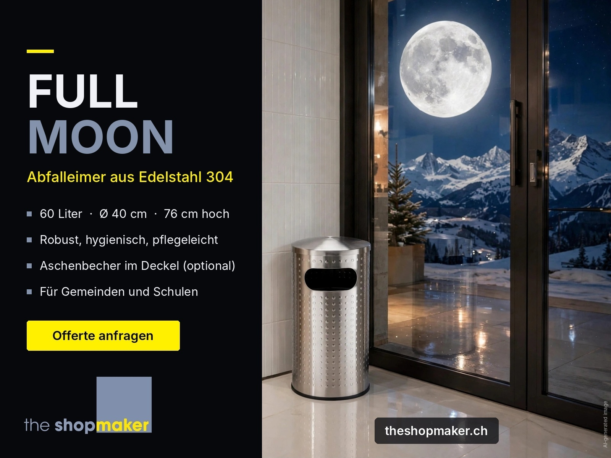
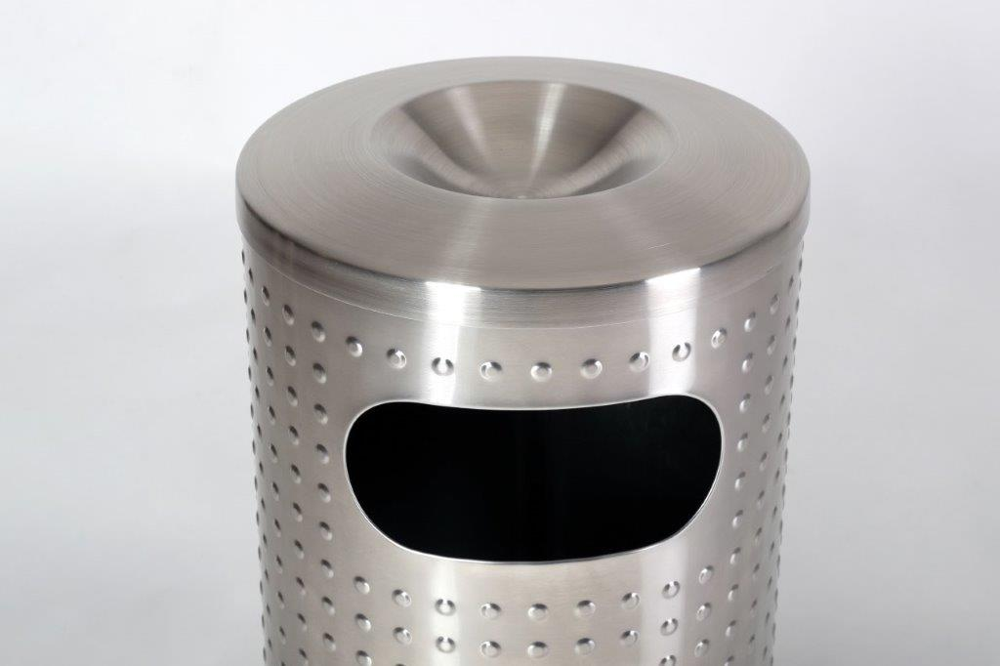
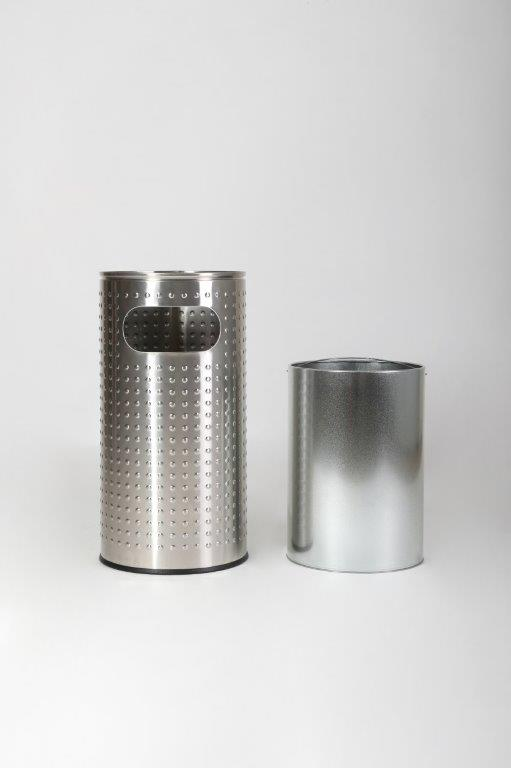
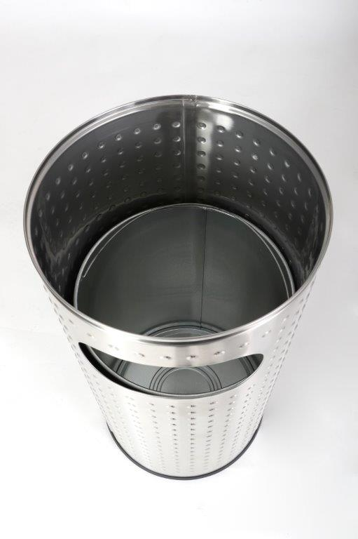

Outdoor · 110 Liter
HALFMOON
Für Tiefgaragen und Eingänge: fester Sockel, Scharniertüre mit Spezialschlüssel, Sackhalter.
Zum ModellEdelstahl-Abfalleimer für die Schweiz






Bilder mit dem Hinweis «Visualisierung» sind computergenerierte Darstellungen.
Edelstahl-Abfalleimer.ch stellt Produkte der Marke The Shop Maker vor, darunter Industriemöbel. Derzeit zeigt die Seite die Bestseller HALFMOON und FULLMOON mit Modellen, Einsatzbereichen und Datenblättern. The Shop Maker ist spezialisiert auf Verkauf und Vertrieb von Industriemöbeln. Zu den bedeutenden Kunden zählen Migros und Coop, eine wichtige Referenz für die Marke und ihre Kundschaft. Offerte, Bestellung und Lieferung in die ganze Schweiz laufen über theshopmaker.ch.
Outdoor · 110 Liter
Für Tiefgaragen und Eingänge: fester Sockel, Scharniertüre mit Spezialschlüssel, Sackhalter.
Zum ModellIndoor · 60 Liter
Für den Bereich vor dem Lift und für Vorplätze: seitliche, ovale Öffnung, Innenbehälter inklusive.
Zum ModellAbfalleimer aus rostfreiem Edelstahl 304 für Gemeinden und öffentliche Plätze, Spitäler, Schulen, Bibliotheken, Museen und die Hotellerie. HALFMOON für draussen, FULLMOON für drinnen. Lieferung in der ganzen Schweiz.
Diese Seite informiert über die beiden Modelle, ihre Einsatzbereiche und die Wahl des passenden Abfalleimers. Die Marke, die Offerte, die Bestellung und die Lieferung in die ganze Schweiz laufen über The Shop Maker.
Geschichte: Die Firma The Shop Maker Josef Laib ist seit dem 9. Januar 1998 im Handelsregister eingetragen, als Einzelunternehmen mit Sitz in Altendorf SZ (UID CHE-108.708.149). Die Marke steht für Verkauf und Vertrieb von Industriemöbeln.